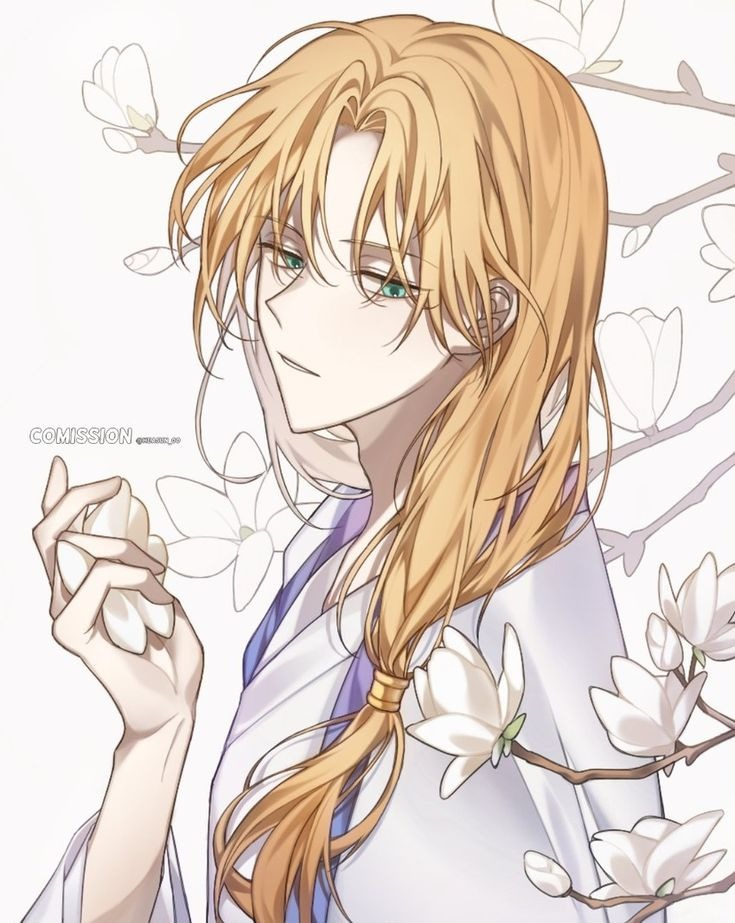

| Kiyome Byakuya | the White Line · the Owl · Byakuya, the near-white line of the Moto · as of the morning of the seven lines in the Hall of Verdicts, standing beside the white chair and not sitting |
| Epithet | The Owl. Naevra Yukari called her that on her own gate, and Tetsugen Akagane has said it to her face in the Hall of Verdicts. The Hall itself, which reads her at Glory, calls her pale as a church and means it three different ways, and thinks her the one chair with sense and too shallow to use it |
| Concept | Her light shows her the seam in everything, and whatever she ties stays tied. |
| Stat line | Stage XI Dissonance · Grandmaster (Flawless) Level 370 · Refined, over a Dissonance fracture she keeps closed · Rusui (留守居), She Who Keeps the House; unnamed on every roll the Hall keeps Fate XI Mastered, II · Spirit X Walked 30%, III · Body Studied 20%, II · Lenses: home + 1 |
| Shown | Level 160 · Stage VI, Glory · Expert · Body I, Muridic: what every Measurewright, Hall assessor and fate-reader has entered for her since she was fourteen, because GLASS shows only what she lets it |
| Combat grammar | Blade, the Byakuya guard’s school: the draw is the whole fight; she has not drawn on any field anyone lived to describe |
| Aura and sound | near-white, clear as fresh glass, with a cold rainbow breaking at its edges the way light breaks in a hung bead; at full push the glass goes to a prism and the whole field rings pale gold, the line Muken hears as hers · sound: glass beads clicking, like rain starting on a slate roof; at full push, a struck crystal bowl held on one high note · texture: hard, smooth and cold-clear, a surface a look slides off · feel: clean linen and the air after a storm, a light warmth on the face, and every shadow near her splitting in two; when the Knot sets there is amber in the white and a smell of sweet resin |
| How she moves | Very straight and very still, standing where the chair is and never sitting in it, her hands loose at her sides and nowhere near the white scabbard. |
| Stack | sustainable Oath 725, Ward 660 and Finesse 680; Reflex 425 and Perception 465 · cap two steps on the hidden scale over the sustainable figure · layers: YUKIAKARI when called, THE RED BEFORE THE WHITE near the heir, the oath while she keeps it |
| Bonded weapon | her katana, by Borin Ironheart, three hundred and twelve years old |
| Kit | near-white silk in the Hall and road linen out of it, glass beads at her temples and a pale halo-ring at her crown, a white-lacquered harness and a cross-bladed spear the north has never seen her wear, and the piece people talk about first: her Very Rare katana by Borin Ironheart, three hundred and twelve years old, in a white scabbard with no knot on it now |
| Voice | ”It’s his. It was always his. I only kept it.” · speaker type: the head of an old guard house, trained to keep the peace in rooms worse than this one, who speaks clear and calm and does not wipe her tears |
| Next gate | Stage XII, Emanation · Catalyst: the Dissonance fracture of the four lines made a feature, the oath kept with something at the end of it at last · holds at Level 320, which her 370 already passes: only the Catalyst is wanting, and past Level 400 without it she would come into Residual Strain |
I. Identity
| Field | Value |
|---|---|
| Full Name | Kiyome Byakuya |
| Pronunciation | kee-YOH-meh byah-KOO-yah |
| Alias / Title | Lady Byakuya · Lady Kiyome · Byakuya-dono · Kiyome Byakuya of the White Line, as she swore at the woodpile |
Also Known As
| Name | Who says it |
|---|---|
| the Owl | Naevra Yukari, who called her and Tetsugen the Owl and the Fox |
| Aunt | Muken |
| the lady with silver on her and a veil | a Stark outrider who did not know her name |
| Field | Value |
|---|---|
| Race / Lineage | Human. Byakuya, the near-white line of the seven, whose oldest office was the Kōkan’s own guard: the king, and the king’s children. Its colors are near-white with glass, veils and halos; its beasts are the Owl, the White Fox, the Heron and the Stoat, and the Owl is carved over the door of her house |
| Age | About thirty |
| Realm / Faction | The Byakuya and the north, sworn to Muken Moto; the white chair of the Hall of Verdicts |
| School and sect rank | Her grandmother’s prayer room, the oath over the lamp at the hour of the evening bell, the armorer’s order and the lacing pattern, the knot, and the Byakuya guard’s draw, which is taught behind a closed door and never shown · head of the Byakuya, by every sign; she has given Muken her land and her name and has not said what that leaves her |
Renown
| Among | What they say of her |
|---|---|
| public | the lady who received the Yukari envoys, gave them tea, and sent them home alive |
| army | the Starks and Greymanes knew her as the lady who brought twelve hundred Thornwall pikes onto the Skeldmere on a white horse |
| sects | the seven lines thought her the one chair in the Hall with sense, and too shallow to use it, which is exactly what the Byakuya have wanted the seven lines to think for eleven hundred years |
| guilds | none |
| epithet | none of her own; the house’s |
| Field | Value |
|---|---|
| Catalyst Event | The Verdict of Six, standing through Torvald Stark’s beheading because she would not sign it, then kneeling to close his eye |
| Refusal | She will not ask her sister’s son for a single thing; the oath binds her to him and does not bind him to anything at all |
| Conviction | Purity before power. Peace before the blade. And the red line before the white, until the end of the red line. She believed the red line had ended for sixteen years, and kept the oath anyway, and that is what it cost |
| Arc kind | Positive: an oath kept past the point anyone thought it could be kept, until the one it belonged to walked in |
II. Soul Architecture
| Field | Value |
|---|---|
| Level | 370; it holds Dissonance (301) and would hold Emanation (320), and no Residual Strain builds in her short of 400 |
| Temperance Stage | XI, Dissonance · Grandmaster. She is in it, not trapped in it; the fracture is the four lines in her sister’s hand, and she has held it closed for sixteen years the way she held the knot |
| Path | Fate XI Mastered · Spirit X Walked 30% · Body Studied 20% · Fate carries the oath and the knot; Spirit carries the reading of a room and the lamp; Body is the draw, one movement trained ten thousand times behind a closed door. · Fate is the lead and she has mastered it, so the Fate Path’s Range and Aura Pressure are hers by right, and she has spent them on a hundred and fifty meters of white hall and on almost nothing else. · Spirit is the Path behind, a Stage late in its gates. |
| Path outliers | Constitution, Penetration, Celerity and Economy stand past the Body gates at the figures below. Body is Studied now, so no new point lands on them past a gate |
| Yield (η) | 0.92 |
| Soul Crystal | Flawless |
| Crystal State | Refined; it has broken and mended so often it has learned how, and at Dissonance that is the only reason it holds |
| Class | 留守居 Rusui, She Who Keeps the House; a class of one, and no roll in the Hall has it, because the Hall reads her at Glory and a Byakuya does not correct the Hall · gives: the skill Keeping the peace, and the Kept Thing, by which whatever she has sworn to hold (a sword, a house, a name, a boy) is known to her without looking, where it is and whether it is whole · shapes: her points fall to the oath, the ward and the edge, and almost none to taking a blow · evolved from: Guard, the common class of the Byakuya training ground, offered back changed the year the council closed the book on the Kōkan and she kept the oath anyway; it evolves as her Fate Mastery rises |
| Mastery | Fate II, Drawn: the lead, held at II, for Byakuya blood and the oath kept since she was nine are no grip without a Work or a blessing, which is as far as keeping an oath goes · Spirit III, Confessor: Walked, a rung behind what her Level reads under Dissonance’s ceiling · Body II, Harmonic: Studied, two behind and capped there; the lucid Shell, thin and clean as the glass it looks like, so that light and thought draw close and Luminalis answers almost before she asks. Every assessor has entered it as I, Muridic, newly emerged, because GLASS returns a Shell’s reading as level as everything else. |
III. Wellspring Harmonizations
| Wellspring | Folk name | Depth | Got from | What it bends in her | Note |
|---|---|---|---|---|---|
| Luminalis | the Lamp | governing | — | light, charge and the clean line | shows her what lies beneath a surface, the mechanism under a face, the seam under a working; the lamp her grandmother kept the oath over |
| Fixatio | the Knot | deep | — | holds what she binds where she bound it | a peace, a sword in its sheath, an oath for sixteen years, a fist in the air between one heartbeat and the next |
IV. Primary Stats
| Primary | Total | Mean |
|---|---|---|
| Vitality | 995 | 124.38 |
| Ardency | 1,755 | 219.38 |
| Gnosis | 1,940 | 242.50 |
| Dexterity | 2,270 | 283.75 |
| Harmonics | 1,410 | 176.25 |
| Resilience | 2,205 | 275.62 |
| Tempering | 975 | 121.88 |
| Dominion (seven, Throne apart) | 1,020 | 145.71 |
| Throne | not opened | · |
| Field | Value |
|---|---|
| Pool | 12,570 |
| Spent | 12,570 |
| Unspent | 0 |
V. Sub-Stats
| Primary | ||||||||
|---|---|---|---|---|---|---|---|---|
| Vitality | Fortitude 150 | Absorption 80 | Constitution 165 | Hemostasis 195 | Regeneration 115 | Filtration 80 | Tolerance 130 | Threshold 80 |
| Ardency | Flux 245 | Alacrity 345 | Depth 195 | Penetration 330 | Compression 380 | Cascade 80 | Overchannel 50 | Density 130 |
| Gnosis | Perception 465 | Acuity 330 | Forecast 195 | Fluency 100 | Retention 195 | Analysis 230 | Cognition 115 | Vigilance 310 |
| Dexterity | Celerity 330 | Reflex 425 | Finesse 680 | Economy 280 | Evasion 230 | Grapple 50 | Feint 80 | Sequence 195 |
| Harmonics | Attunement 230 | Projection 150 | Breadth 115 | Stability 275 | Empathy 230 | Synergy 80 | Axis 150 | Suppression 180 |
| Resilience | Integrity 265 | Ward 660 | Persistence 80 | Anchoring 180 | Fortification 115 | Hardening 100 | Oath 725 | Continuity 80 |
| Tempering | Clarity 245 | Overflow 35 | Maturity 150 | Coherence 180 | Yield 150 | Ceiling 50 | Capacity 115 | Longevity 50 |
| Dominion | Radius 150 | Sovereignty 195 | Sense 150 | Gravity 115 | Pressure 195 | Command 165 | Fate 50 | |
| Note | Oath 725 is the whole woman, at the very top of what Dissonance will hold and past the line where it carries fracture risk; the oath is the crack and the thing holding the crack shut. Ward 660 and Finesse 680 are the guard’s two halves, the wall and the edge. | — | — | — |
VI. Force of Hand
| Measure | Figure | Feat | Carried by | Note |
|---|---|---|---|---|
| Strike Force | Penetration 330 | — | Penetration 330 | the draw puts it a step higher on the hidden scale, where the cut rides the light |
| Lifting | Constitution 165 | — | Constitution 165 | — |
| Travel speed | Celerity 330 | Mach 5 to 25 | Celerity 330 | — |
| Reaction | Reflex 425 | 0.05 to 0.2 ms | Reflex 425 | — |
| Durability | Fortitude 150 | — | Fortitude 150 | a Grandmaster who cannot afford to be hit, and is not |
VII. Aether Flow
| Measure | Figure | Note |
|---|---|---|
| EU Reserve | 144,757,142 EU | — |
| Flux Density | 7,800,000 EU/g | — |
| AU/s | 7,176,000 | — |
| From full | empties in 20.2 seconds at full output, Starvation at 18.2 seconds | nobody has ever seen her spend at full |
| Recovery | ten per cent a minute at rest, and she rests badly | — |
Spending tells
| Reserve left | What shows |
|---|---|
| half | the beads at her temples stop clicking and hang still |
| a quarter | the cold rainbow at her edges goes out |
| a tenth | the near-white flickers to gray and she has to put a hand on something to stand |
VIII. Traits
Full accounts: Kiyome Byakuya — Abilities
Every Trait reads at her lead Mastery, Fate II.
| Trait | Kind | Source | Path and Form | Gates | What it does | Limit | Tell | Cost | Counter | Numbers |
|---|---|---|---|---|---|---|---|---|---|---|
| THE WHITE KNOT | Primary | — | Path Fate: a bond tied on a thing and on a room · Lens Fixatio · Form Bind | none on the card | Three quick turns of white cord round the guard and the scabbard mouth, and the peace she walked in with holds better than it should | It holds her own peace and her own sword; it cannot make another man keep his. | Three quick turns of white cord round the guard and the scabbard mouth. | About two per cent of her reserve to tie and nothing to keep. | Cut the cord, and the cutting costs the cutter, because the Dawi who made her sword felt her ancestor’s knot in the steel for three hundred and twelve years and walked four hundred miles when it came undone. | — |
| BROKEN AND MENDED | Secondary | — | Path Spirit, Walked: the Core mending its own break · no lens; the Crystal’s own habit · Form Make, turned on herself | none on the card | The silver rings in her eyes turn once, she breaks where the whole room can see it, and she is whole again inside a breath; at Dissonance it holds her Crystal too | It mends one break at a time; a second blow inside the breath finds her still open, and a second break she does not always mend. | The silver rings in her eyes turn once. | Nothing she shows. | Strike twice before she mends. | — |
| THE RED BEFORE THE WHITE | Inherited | — | Path Fate: a vow, kept on her own share and pulling nothing down · Lens the house’s oath, no Wellspring · Form Bind | none on the card | the Byakuya oath to the Kōkan heir; near him her Oath and Ward stand a step higher on the hidden scale and fear reaches her late | Its own reading: it binds her to the boy, and does not bind the boy to her; she can serve him and cannot command him, and when the king himself is holding the knife, as Gimbzo was, the oath has nothing to say and her blade will not leave its scabbard against him. | Her lips moving over the words. | Nothing to keep and everything to break. | Set the heir against his own good and make her choose. | — |
| GLASS | Passive | — | Path Spirit, Walked: the surface of the soul, turned against a look · Lens Luminalis · Form Write | none on the card | Every reading of her comes back level, and level is whatever she holds up to it; wards go over her like water over a window | It hides nothing she chooses to show and protects nothing she is not; plain eyes see her perfectly, and she cannot lie through it, because she does not lie. | Every reading of her comes back level; wards and readings slide off her. | Nothing. | A plain question asked in plain light; plain eyes and a plain question. | — |
IX. Skills and Abilities
Full accounts: Kiyome Byakuya — Abilities
Skills
| Skill | Cues / mechanics | Learned where | Priced by (Sub-Stats) | Mark | Rank |
|---|---|---|---|---|---|
| Arming and lacing | the old dressing order, under-robe to throat-guard; the dense diagonal; red for the red line, white for the white that kept it | her grandmother | Finesse, Retention | Mastered | Master |
| Field surgery | arrowheads out, ribs strapped, a wound closed as well as anybody | the war, and the surgeons’ line at the Foot | Finesse, Hemostasis | Drilled | Master |
| Keeping the peace | tea, a level voice, and nobody leaves without being heard | her hall, and rooms worse than this one | Empathy, Stability | Mastered | Adept |
| The Byakuya draw | one movement, thumb, hip and blade together; the guard’s school behind a closed door | the training ground at the white house, with Kasane, and then alone for sixteen years | Finesse, Reflex, Alacrity | Mastered | Master |
| Crows | four words to the right house: “The red line lives” | her house’s birds | Analysis | Drilled | Adept |
| The field spear | the cross-bladed spear carried low; one long lunge, the side-blades to hook, beat and cut short, the shaft held short inside an arm | the same closed door, sixteen years of mornings | Finesse, Reflex, Celerity | Drilled | Master |
| Reading a room | who is about to reach for a weapon, then what is under their face | the Hall of Verdicts, and rooms worse than it | Perception, Vigilance, Empathy | Mastered | Expert |
Techniques
| Technique | Kind | Mark | Source | Path and Form | Gates | What it does | Limit | Tell | Cost | Counter | Numbers |
|---|---|---|---|---|---|---|---|---|---|---|---|
| THE LAMP AND THE KNOT | Signature Art | — | — | — | — | Her light shows her the seam in everything, and whatever she ties stays tied | — | — | She cannot hide in her own light and she cannot put down what she has tied: the oath is the crack in her Crystal and the thing holding the crack shut. | Wet air, rain or a grounded iron for the draw; a working with no seam; a will stronger than her Sovereignty; two blows inside one breath; or set the heir against his own good and make her choose. | Reserve: 144,757,142 EU · Flux Density: 7,800,000 EU/g · AU/s: 7,176,000 at yield (η) 0.92 · From full: empties in 20.2 seconds at full output, Starvation at 18.2 · Glass, Broken and Mended and The Red Before the White: no reserve · The White Knot: about 2% to tie, nothing to keep · Musubi: about 3% a turn of the breath, near 4,340,000 EU · Kagami-wari: about 2%, near 2,895,000 EU · Shirobane: about 1% a fan, near 1,448,000 EU · Hakkō: about 4%, near 5,790,000 EU · Shingan: about 4,000 EU a second held wide, about ten hours · Yukiakari: about 603,000 EU a second, four minutes · Hakuren: about 965,000 EU a second, two and a half minutes · Kōkan no Mae: about 3,620,000 EU a second, forty seconds · Musubi: one thing at a time; Sovereignty 195 · Kagami-wari: and a heartbeat of looking · Hakkō: what the Measurewrights reckon at 5.33 TJ, about a kiloton and a quarter · Yukiakari: Reflex, Finesse and Perception a step high on the hidden scale, half that called silent · Hakuren: about a hundred and fifty meters · Sound: the glass beads for the art, clicking at rest, ringing under Yukiakari, one held bowl-note under Hakuren · a click as each turn of Musubi sets · a whisper where a Shirobane feather opens skin; in flight it has none · Hakkō has no word of its own: the thunder after the cut is its sound, and nobody who heard it close has lived to name it |
| HAKKŌ | Signature Technique | Mastered | Taught | Path Body, Studied: one cut from the scabbard, with the full force of it at contact · Lens Judicium, the guard’s school’s lens for the draw, carried in the sword’s steel, never harmonized by her, and fired at the away rate · Form Strike | none on the card | The Byakuya draw: a hair-fine violet line hangs in the air for one breath, and then the cut is already over and the thunder comes after. She does not call it; the thunder does | The channel: what Judicium parts out of the air is a storm’s road and keeps a storm’s habit of the easiest way to ground, so wet ground, rain, grounded metal or a body of water near the line pulls the channel off true before the blade can follow it, and a cut that loses its channel arrives at the speed of a very fast woman, which is still very fast. | The violet line, a full breath of it before the cut. | About four per cent of her reserve; after, the thunder is loud enough to stun anyone near it who did not see it coming, her allies included; near 5,790,000 EU | Wet ground, rain, grounded metal; a grounded piece of iron thrust across the line takes the stroke. | Delivers: along a line a few inches wide, what the Measurewrights reckon at 5.33 TJ, about a kiloton and a quarter |
| KAGAMI-WARI | Bloodline Art, Byakuya | Mastered | Inherited | Path Spirit, Walked: a working read, and parted at its join · Lens Luminalis, through the Meigan · Form Read, finished with a Strike | none on the card | ”Kagami-wari.” She looks at the working and not at the man, finds the join where it was put together, and cuts there, and it falls in two clean halves | A working must have a seam: a pure physical blow has none, a working that is all one law with no boundary has none, and a Trait, which is the soul’s own law and not a boundary at all, gives her nothing to cut; she can split GŌKA at the seam where the fire is placed, and she can do nothing to ENSHŌ. | She looks at a working instead of its owner. | About two per cent of her reserve, near 2,895,000 EU, and a heartbeat of looking that she cannot spend on anything else. | A working with no seam, or a fighter who never lets her stand still long enough to look. | — |
| MUSUBI | Application of Fixatio | Drilled | Lived | Path Fate: a condition tied on a thing she can see and name · Lens Fixatio · Form Bind | none on the card; the contest is her Sovereignty against the bound thing’s | ”Musubi.” Three turns of white light round a wrist, a raised blade, a door, a fire’s front, and the thing stops where it was like a fly in amber for as long as she pays | Sovereignty and sight: what she binds must be a thing she can see and name, and a practitioner whose Sovereignty outranks hers pulls out of the knot at a cost to both of them; against a stronger Sovereignty it holds one heartbeat, cracks, and goes to white dust. She can hold a man’s arm and not his will. | The three turns of light. | About three per cent of her reserve a turn of the breath, near 4,340,000 EU, and she can hold one thing at a time; a contested knot splits her fingernails on whatever she is holding. | A will stronger than her Sovereignty, or a thing she cannot see. | — |
| SHINGAN | Bloodline Faculty, Moto | Mastered | Inherited | The Moto blood’s eye, in her line the Meigan, the Eye of Revelation · no lens of its own; Luminalis sharpens it · Form Read · it spends her own share and pulls nothing down | — | Silver rings in her eyes that see where a thing carries its weight and what is working under a face | It cannot read a man who is truly still inside, and it does not tell her what to do about what she sees. | The rings lie flat and silver as winter ice. | A slow, steady spend while it is held wide, about 4,000 EU a second, about ten hours from full. | A man who is truly still inside. | — |
| SHIROBANE | House Working, Byakuya | Drilled | Taught | Path Spirit, Walked: projection, force at range, sent to read · Lens Luminalis · Form Read, carried on a Strike | none on the card | A silent fan of owl feathers made of light, two hundred of them, that open a body a finger deep and light it through like a lantern held behind a paper screen. She does not call it | The light: fog, steam and smoke scatter the planes into glare before they arrive, and a mirror-bright surface throws them wide. It wounds shallow by design, and what it shows she must still act on with something else. | Every shadow near her splitting in two, and the beads ringing; a white fan opens ahead of her without a sound. | About one per cent of her reserve a fan; near 1,448,000 EU | Bad air, or a body that drinks heat, closing every seam the feathers open and keeping their heat for itself. | — |
Vows
| Vow | Sworn to or before | Binds and lifts | Stands |
|---|---|---|---|
| The Byakuya oath | over the lamp at nine | the red line before the white, until the end of the red line | — |
| At the woodpile, of the White Line | — | the white house in the Shiraki hills and its land, its forty riders, the granary under its floor that the Tenrai have never found, her sword, her name, and her oath, which was his before he was born | — |
| At the ratification | with Hisae Thornwall | the oath again, softly | — |
Releases
| Release | Kind | Mark | Source | Path and Form | Gates | What it does | Limit | Tell | Cost | Counter | Numbers |
|---|---|---|---|---|---|---|---|---|---|---|---|
| YUKIAKARI | First Release, kept past her Fate lead’s count because the frozen road saw it | — | — | Path Spirit, Walked, with the Studied Body’s edge under it: the body made the lamp · Lens Luminalis · the Lamp let off its limit | — | “Akari.” One word, light, and the glass of her goes to a prism: every color at once round her edges, the beads ringing, a pale gold circle on the floor at her feet; Reflex, Finesse and Perception strike a step high on the hidden scale | — | — | The Veil: once anyone has seen it, the Stage VI lady is gone for good in front of them; afterwards her hands shake for an hour; about 603,000 EU a second, four minutes from a full reserve | Everything that counters HAKKŌ, and patience. | — |
| HAKUREN | the One, counting as her Second | — | — | Path Fate, the lead Path’s One | — | It opens and powers the Domain | Held past its limit it is a Crystal Fracture Event along the line of the four letters, and she has never held it past its limit. | — | — | — | — |
| KŌKAN NO MAE | the One’s last stage, called inside the White Hall | — | — | Path Fate, Mastered · Lens Fixatio, on the house’s oath · Form Bind, made local law inside the Hall · the Inherited Trait’s stated effect, for that effect alone | — | With the heir behind her, inside her Hall, every blow meant for him lands on her instead | The oath’s own: it guards him from outside, and it has nothing to say if the knife is in his own hand. | — | Plain, and she said it at nine: what would have killed him is owed by her, and if it is enough, it is paid; about 3,620,000 EU a second, forty seconds from a full reserve | Make her choose between him and his good, or outlast forty seconds. | — |
| HAKUREN | Domain | — | — | Path Fate, Mastered: a claim on conditions, authored in the Core · Lens Luminalis · Form Claim | none on the card | A hundred and fifty meters where nothing has a shadow and nothing has an inside she cannot see, and a lie shakes the light round the mouth that told it | Its Dominion, a mean of 145.71 with Sovereignty 195: a practitioner of her Stage with stronger Sovereignty contests the ground and dims the field from its edge, and a Domain that is itself made of light, or a heat bright enough to drown it, washes it out. | — | The law is total: she cannot hide in it either, and it shows her allies’ secrets to her enemies as plainly as theirs to her; about 965,000 EU a second, two and a half minutes from a full reserve | A stronger Sovereignty dimming it from the edge, a brighter light or a great heat to drown it, or fighting her with nothing hidden. | Radius: about a hundred and fifty meters |
X. Spirit Axes
| Person | Bond | Axis weight | What flows across it | Note |
|---|---|---|---|---|
| Muken Moto | her sister’s son, her king | 25 | a long white hand laid on the back of his bloody one | through the Waiting; he did not move it away, and did not turn it over to take hers |
| Kasane | her sister, dead | severed | four lines in her hand by runner the night she went | and sixteen years of believing she had gone into the closed book |
| Naevra Yukari | her friend from the summer they were nine | 15 | mended at the enclave gate after twenty years of not writing | — |
| Hisae Thornwall | her mother’s cousin | 10 | the oath spoken together | — |
| Tetsugen Akagane, Hayato Amagiri | — | 15 each | the night at the white house when the three of them told each other the truth of their Stages, and nobody else | — |
XI. Resistances
| Against | Resistance | Carried by | Note |
|---|---|---|---|
| Wards, reads and soul-work | near-immune | GLASS and Ward 660 | — |
| Fear in the heir’s service | very strong | the oath | — |
| Grief | she does not hide it, which is its own resistance | — | — |
| The blow | poor | — | she was built to end the fight before it lands |
| Heat and wet | HAKKŌ’s channel hates both | — | — |
XII. Physical Description
| Feature | Description |
|---|---|
| Build | She is tall and very straight, as tall as Naevra Yukari, nearly, and pale, so that standing face to face with the Yukari they might be the same white figure and its reflection in dark water. |
| Hair | Her hair is a warm gold, long, fine and loose, with heavy locks falling across her brow and into her eyes, and the length of it gathered low over one shoulder in a loose tail bound with a narrow band of gold. |
| Face and eyes | Her face is fine and long-boned, with a straight nose, a small composed mouth that lifts at one corner more often than people expect, and eyes of clear sea-glass green with fine silver rings in them that lie motionless as the face of a deep well and turn once, slowly, when something strikes her. |
| In the Hall | She wears white: in the Hall, silk so near to white it seems under the lamps to give off a faint light of its own, crossed at the collar over an under-robe of soft blue and violet, with the veil of her line, fine glass beads, pinned back from her face so that they hang at her temples and click when she moves her head, and a halo-ring of pale metal at her crown. |
| On the road | On the road, layered linen the white of fresh washing, gray at the hem from the dust and the slush. |
| The sword and her hands | Her katana rides at her left hip in a white scabbard, without its knot. Her hands are long and pale, and since the Foot they have been red to the wrist more often than not. |
XIII. Psychology
| Field | Value |
|---|---|
| Core Wound | Her sister went into the salt and sent four lines telling her to stay home, and she stayed, and looked for years, and stopped looking |
| Flaw | She keeps an oath past reason, and carries guilt for votes cast when she was ten |
| Desire | That her sister’s son hear who he is from his own, in his own hall, while he can still choose; that he have friends in the world |
| Strength | She does not lie, and she does not look away |
| Loop | break, mend, keep the oath, bow by the finger’s width |
| Foil | Shizuha Shirogane, the other woman in the Hall who kept a line’s purpose for a thousand years and chose the knife |
| Stress Default | clearer and calmer, until it breaks |
Voice block
| Field | Value |
|---|---|
| Speaker type | the head of an old guard house who keeps the peace in rooms worse than this one |
| Chant tongue | the old high register of the house, for the oath; northern Common otherwise |
| Lying tell | none; GLASS |
| Notices first | who in the room is about to reach for a weapon, then what is under their face |
| Sentence length | clear, level, finished; short when it matters |
| Contractions | sometimes; “I’ll not” |
| Pet phrase | ”Seven lines forgive us” |
| Never says | a request of her king, or her own Stage |
| Stumbles | no; she breaks and mends instead |
| Stress shift | calmer, until it breaks |
| Grief shift | she does not wipe her eyes |
| Joy shift | the corner of her mouth, and the beads, which move before she does |
| How modern | formal, old-fashioned, the voice of a house older than the Seat |
| Sample line | ”It’s his. It was always his. I only kept it.” |
XIV. Equipment
| Item | What it is | Grade | Rarity | Rung | Bonded |
|---|---|---|---|---|---|
| Her katana | by Borin Ironheart, Item Tier Hallowed | A | Very Rare | Fieldwinner | yes |
| The glass veil and the halo-ring | the Byakuya’s at council; plain | — | Rare | — | — |
| Kasane’s red harness | the Samurai of Fate harness her sister wore | A | Legendary | Fieldwinner | — |
| The harness of the Byakuya guard | lamellar laced in red silk; stamp Instrument | B | Rare | Siegepiece | no |
| The field spear of the house | a cross-bladed jūmonji yari; stamp Instrument | B | Rare | Siegepiece | no |
| The Hall robes | white silk; plain | — | Rare | — | — |
| The road linen | layered linen; plain | — | Common | — | — |
| The Thornwall belt | white-tawed deerskin; plain | — | Uncommon | — | — |
| Item | What it is | Look | Maker’s mark | Wear and repairs | How it is shown off | What people say | Other | Price |
|---|---|---|---|---|---|---|---|---|
| Her katana | — | pale bright steel with a temper-line like a slow tide; white rayskin under white silk at the grip, a pale iron guard; the scabbard white lacquer over ash, its mouth worn gray by one left thumb and five women’s before hers | made by Borin Ironheart in the Varrak-Thur three hundred and twelve years ago for her grandmother’s grandmother’s grandmother, who stood at his anvil sixteen hours while he worked and tied the white knot round its guard with her own hands; proof-mark Borin Ironheart’s, under the grip | around the guard runs a fine groove where a cord sat for three centuries | by not showing it; everyone who knows what that sword is looks at the place the knot isn’t | Borin calls it a short job, sixteen hours, and slept two days after; five Byakuya have carried it, and there is no story of it being drawn, which is how the house wants it | white scabbard; one knot gone to Tsugigane, and the cord on its guard found cut at her death on the north road; about a kilogram and a quarter, a long arm’s length, balanced a hand before the guard; along HAKKŌ’s line it beats Instrument plate, and in the wet, or against Hallowed plate, it is only a very good sword; nobody in the Hallenfeld counting-house has been willing to write a figure | — |
| The glass veil and the halo-ring | — | fine beads of hand-drawn glass on white silk thread, pinned back so that they hang at her temples and throw small cold rainbows on her cheek; a narrow ring of pale silver-gilt at the crown | — | a bead at the left temple has been replaced and is a hair greener than the rest | the beads move before she does, and rooms have learned to watch them | Naevra Yukari calls them the Owl’s whiskers | — | — |
| Kasane’s red harness | the Samurai of Fate harness her sister wore six years at Gimbzo’s side, left in the white house in the Shiraki hills the night she went into the salt | it hangs on the wall of the white house, and she has lacquer-cleaned it once a year for sixteen years without saying why | — | — | — | — | still there; held for the heir | — |
| The harness of the Byakuya guard | cuirass and skirts of lamellar the white of fresh snow, laced in red silk, the reverse of her sister’s, because the white line keeps the red; sleeves of fine mail under white silk | her grandmother laced it in the dense diagonal, and she has relaced one row herself and can tell which | — | — | she will show it once, and the red lacing is going to be the first thing about her anyone has ever seen | — | nobody in the north has seen her in it; it has hung on a wall beside the red one; its flaw is that white lacquer holds every mark, and it is built for a woman who means not to be hit | — |
| The field spear of the house | a cross-bladed jūmonji yari as long as she is tall and a forearm more, the straight blade and two curved side-blades forged in one piece, the shaft lacquered white | she has never carried it where anyone could count | proof-mark an owl’s eye cut at the socket | the white shaft is chipped a finger’s breadth below the socket, sixteen years of mornings behind a closed door | — | nothing yet | about two and a half kilograms, balanced a forearm behind the socket; the side-blades hook and beat Tempered plate; fails against Instrument plate and above | — |
| The Hall robes | white silk so near to white it seems to give off a light of its own under the lamps, crossed at the collar over an under-robe of soft blue and violet | a clean, almost ecclesiastical cut, with no fur and no steel, as her line wears it; a narrow band of gold binds the tail of her hair | — | — | she stands beside the chair in it, and never sits | pale as a church, in every mouth in the Hall, and they mean it three different ways | — | — |
| The road linen | layered linen the white of fresh washing, gray at the hem from dust and slush | she washes it herself when she can, and since the Foot it has been red to the wrist as often as it has been white | — | — | — | — | — | — |
| The Thornwall belt | white-tawed deerskin tooled in native Kharven interlace, worn low under the robe, with a small owl-face boss in pale silver-gilt | her mother’s, from Thornwall, and the one thing on her that is not Moto; twelve hundred pikes came when she sent four words, and this is part of why | — | — | — | — | — | — |
XV. Temperance Record
Level log
| Levels | Where they were earned |
|---|---|
| 1 to 100 | the white house and its yard, the oath, the arming |
| 101 to 200 | the war’s last years, above her rank under Gimbzo’s banners, where every engagement paid many times over |
| 201 to 370 | sixteen years in the white house keeping an oath with nothing at the end of it, drawing alone behind a closed door, and the war’s end |
| what the Hall has entered | Level 160 |
Stage ledger, true
| Stage | Name | Catalyst | Bought | The story in a line |
|---|---|---|---|---|
| I to IV | — | — | — | the Byakuya way, by the book |
| V | Splintering | — | — | the cellar night’s news, at fourteen |
| VI | Glory | — | — | the Verdict of Six, before the whole Hall, which is the last Threshold anyone saw |
| VII to X | — | — | — | alone in the white house, each Threshold a year she spent believing the red line was ended and keeping the oath anyway |
| XI | Dissonance | — | — | the night she understood the four lines in her sister’s hand had been a lie told to keep her safe, and kept the oath through that too |
| Field | Value |
|---|---|
| Stage ledger, shown | Stage VI, Glory, since the Verdict of Six |
XVI. Fracture Log
| Event | Layer | Status | What it left |
|---|---|---|---|
| The four lines | Attraction | processed | THE RED BEFORE THE WHITE, kept with nothing at the end of it |
| The Verdict of Six | Core | processed | BROKEN AND MENDED |
| The lie in the four lines | Core | open | the Dissonance fracture; held closed |
| Note | --- | — | — |
Lore
Full account: Kiyome Byakuya — Lore
Ties
| Person | Who they are to her |
|---|---|
| Muken Moto | her sister’s son and her king. |
| Kasane | her sister, twelve years older, the last Samurai of Fate. |
| Yukazuri Moto | her niece, whom she never spoke to. |
| Naevra Yukari | her friend from the summer they were nine. |
| Hayato Amagiri, Tetsugen Akagane | who came to her white house by night, and told her the truth, and heard hers. |
| Hisae Thornwall | her mother’s cousin, Lady of Thornwall. |
| Borin Ironheart | who made her sword and felt her knot come undone. |
| Nanami Shirogane | fostered ten years in her house, now in the silver chair. |
| Shizuha Shirogane | ”Sit down, Kiyome.” |
| Torvald Stark | whose eye she closed. |
| Ulf Stark | whom she knew since she was a girl in her grandmother’s house. |